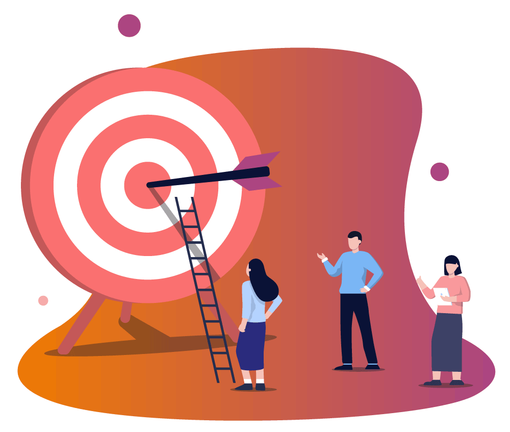

My current skills include making low and high fidelity prototypes, knowledge of Galitz principles for a good digital product, surveying skills, and presentation skills. I have basic knowledge of prototyping tools, such as Figma and Penpot, but as of now, I am not 100% in those.

Passed Courses
Orientation to Digital Services, Orientation to Software Engineering, Digital User Experience, Digital Service Prototyping.
Tools I know
Figma, Penpot, Microsoft Forms, Google Forms, Balsamiq, Adobe XD, Sketch, Slack, Microsoft Teams, Zoom
Methods I know
Surveys, interviews, usability testing, Low-fidelity sketches, wireframes, paper prototyping, interactive prototypes, clickthrough demos, high and low fidelity prototypes.

My Aims and Objectives
I love the process of building applications. I love seeing an idea evolve into a functional, user-friendly application. My goal is to improve my skills in application development. Through this course, I aim to learn advanced design principles. A key objective for me is to witness and learn how all stages in a digital service project are connected and how they come together. I aim to understand how each phase influences the others. This passion fuels my interest in this course.
Known Obstacles
There are obstacles that might undermine my efforts. As opposed to working individually, group work often creates a temptation to delegate and divide tasks and this way team members don’t get to learn all there is to learn from doing the project. Other than that, no obstacles.